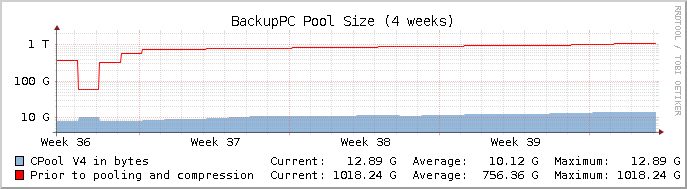
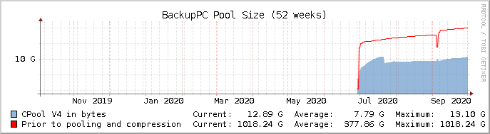

| Host | Type | User | Start Time | Command | PID | Xfer PID | Status | Count |
| nas_fsroot | full | root | 2020-10-01 21:37 | BackupPC_dump -f nas_fsroot | 14081 | 14096, 14098 | backup share "fsroot" | 3821 |


| Host | Type | User | Last Try | Details | Error Time | Last error (other than no ping) |